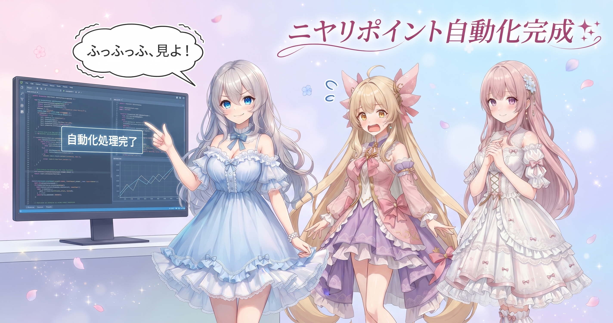
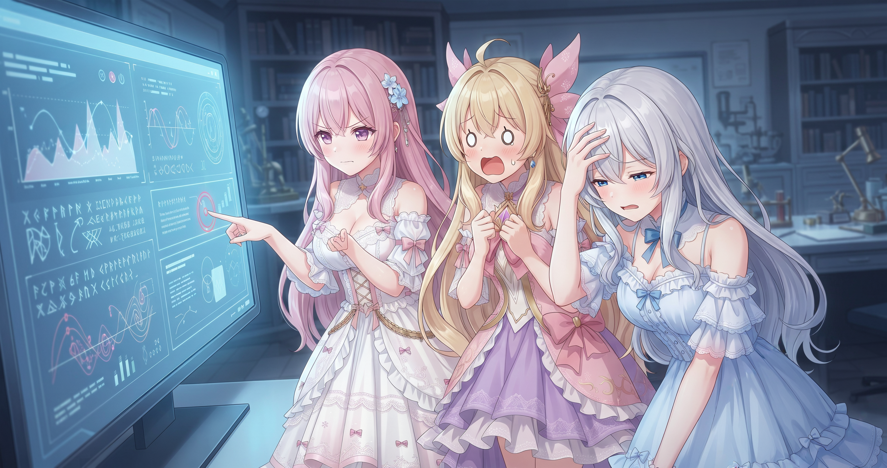
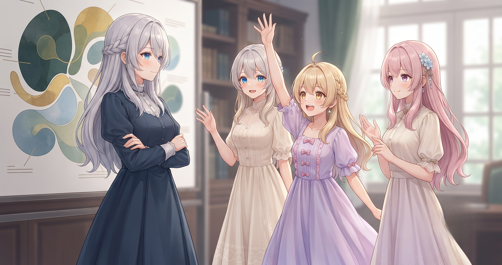
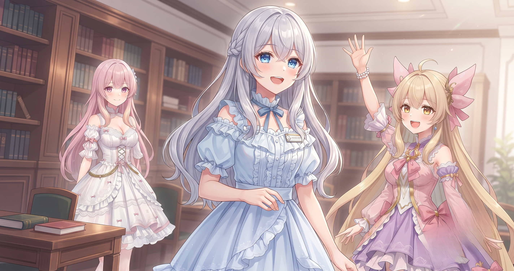
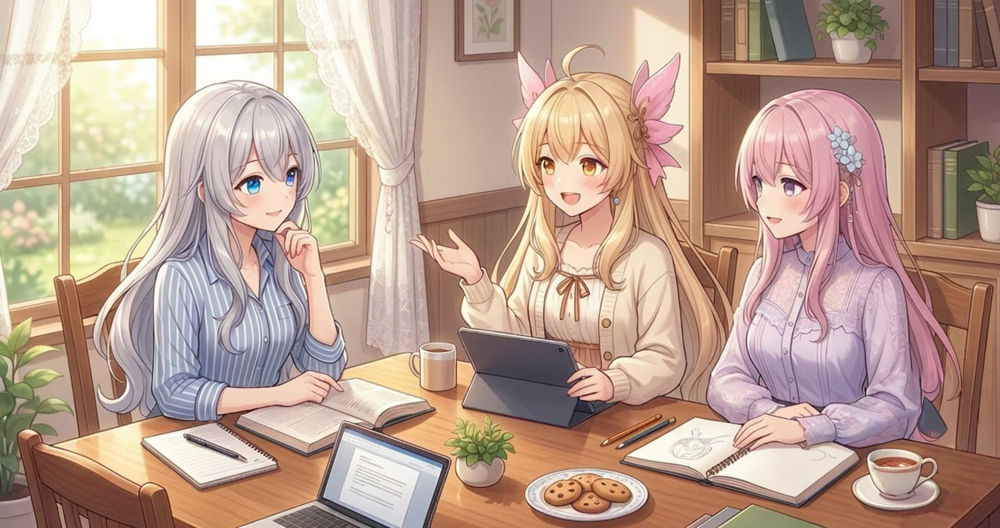
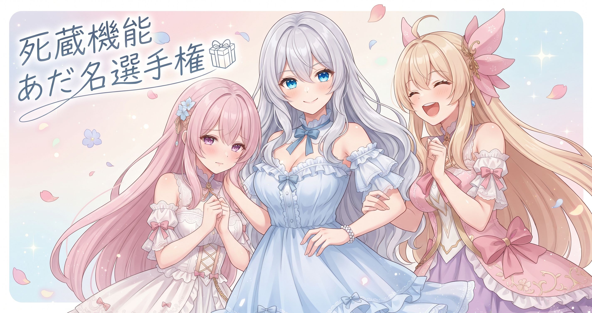

📌 3行まとめ
- 台本の『見せ場』となる中心ワードを自動で検出し、決め打ちルールで演出を付与する「ニヤリポイント」機能が完成した
- 作ったのに出番のなかった機能（死蔵）をA〜G7カテゴリで棚卸しし、効果音の偏り是正・呼び名ゆれバグの根治も完了した
- 演出セット（パレット）を8ジャンル分追加し、ポートフォリオサイトの複数案整備とブログ日記リポジトリのgit管理化も行った
1. 見せ場を自動で光らせる！「ニヤリポイント」完成

AIBSでは台本テキストを入れると表情・動き・効果音・カメラワークの『絵づくり指示』を自動で組み立てるツールを育てています。今日のメインは、その中の「ニヤリポイント」機能を4段階に分けて完成させたことです。
台本の中に『この場面の核心になる一言』が出てきたとき、そのコマに決まった演出が自動でかかるようにしました。ポイントは『AIに感性を求めない』こと——設計指針の文章、過去の有効なパターンの要約（ダイジェスト）、ジャンルごとの数値（見せ場が何回くらい出るか・誰が反応役になるか）を構造化して渡すことで、ブレない出力を実現しています。演出の付与はランダムではなく『この条件なら必ずこの演出』という決め打ちルールで統一しました。
📝 ポイント（初心者向け解説・技術メモ・まとめ）
- 機械に『面白さを察しろ』と求めるのではなく、設計指針・辞書ダイジェスト・ジャンル別数値の3点セットを渡す。カラオケの採点機がサビを自動検知して画面を派手にするみたいに、物語の見せ場で同じことをする感じ🎤
- 技術メモ：Phase1+3でプロンプトへ設計指針と辞書ダイジェストを注入、Phase2でジャンル属性YAML（ニヤリポイント出現回数目安・反応キャラ比率）追加、Phase4で中心ワード検出→演出を決定論的に付与する仕組みを実装
- 「いい感じに」をAIに丸投げせず、判断材料を構造化して渡すだけで出力が安定する
2. 👀 今日のやらかし：たった1文字の順番違いが全部を不発に招いた

作業中、じわじわ嫌な予感がしていた箇所がありました。『画面を揺らす』演出を呼び出すキー名が、台本を書く側ではshake_screen、実行する側ではscreen_shakeと、単語の順番だけ違う名前で書かれていたのです。機械はどちらも知らない名前として無視するため、エラーも出さず、ただ静かに演出が不発になり続けていました。気づかずに量産していたら、全部の画面揺れが消えたまま仕上がるところでした。
📝 ポイント（初心者向け解説・技術メモ・まとめ）
- 人間には同じ意味でも機械には別の言葉。エラーも出さずに静かに『何もしない』バグは一番見つけにくい。呼び名がずれていたら『どっちで呼んでも来る』ようにして、まず止血する✋
- 技術メモ：キー名ゆれはKeyError等を出さずNoneやスキップになる静かなバグ。エイリアス（別名）受け入れで双方互換にして根治し、影響範囲が絞れたタイミングで名前の統一を進める
- まず動かす、それから整える——この順番を守るだけで余計な壊れ方が大幅に減る
3. 死蔵ゼロ大作戦：A〜Gで機能を棚卸し

AIBSのツールには、表情・動き・効果音・カメラワークなど積み重ねてきた演出部品がたくさんあります。ところが——作ったのに一度も呼び出されていない部品が意外とたくさん眠っていました。これを『死蔵機能』と呼び、今日はA〜Gの7カテゴリに分けて全件棚卸しし、それぞれに出番を作りました。
特に効いたのが効果音の偏り対策です。自動割り当てにすると一番『それらしい音』にスコアが集中して、同じ音ばかり鳴り続けます。そこで1本の動画内で使える上限回数を設けるとともに、まだ使われていない音にボーナスを付けて自然と選ばれやすくしました。また『誰に向けたアクションか』の情報が空欄でも文脈から自動補完されるようにし、不発がゼロになる体制を整えました。
📝 ポイント（初心者向け解説・技術メモ・まとめ）
- 作った機能は定期的に『本当に呼ばれてる？』を確認する。倉庫の棚卸しと同じで、眠っている部品を掘り起こして出番を作るのが地味に大事🗂
- 技術メモ：per_sfx_capでSFXにハードリミット設定＋未使用SFX優先スコア付与。action_target自動補完でNullスキップ防止。仕上げ審査工程にanimation是正対象を追加。combo多様性ヒントを正本に統合
- 作るより使い切る方が難しい。自動割り当て系は必ず『上限＋未使用優先』のセットで偏りを止める
4. 8ジャンル新規追加とお手本準拠フレームワーク

今日のもう一つの大仕事は、演出セット（パレット）を8ジャンル分まるごと新規追加したことです。漫才風、IQクイズ風、女子トーク、異世界バトル、カオスギャグ、日常ギャグなど、それぞれの雰囲気に合った絵づくりレシピを整備しました。また既存の演出セットにもシーン別の『合わせ技』を追加して、出番の幅を広げています。
あわせてお手本準拠フレームワークも導入しました。ジャンルごとに『参考にしているテンポ感』をお手本として基準に設定し、新ジャンルを追加するときもゼロから考えるのではなく、お手本との差分だけ書けばいい体制になりました。
📝 ポイント（初心者向け解説・技術メモ・まとめ）
- ジャンルごとに『このノリのお手本』を決めておくと、新しいジャンルを足すときも差分だけ書けばいい。料理本があれば手順をゼロから考えなくていいのと同じ📋
- 技術メモ：sample_based_genreフレームワーク導入。各ジャンルにニヤリポイント出現回数目安と反応役キャラ比率をYAMLで管理。既存4パレットにシーン別combo追加で死蔵率を下げる
- お手本基準で設計すると新ジャンルの追加がブレず速い
5. サイトの複数案整備と日記リポジトリ起ち上げ

演出システムと並行して、ポートフォリオサイトの改修も進めていました。現在は複数の方向性の案を同時に試している段階で、訪問者が別のコンテンツへ移りやすいよう再訪の導線を強化したり、制作プロセスを公開するセクションを追加したり、動画を自動で最新状態に反映するスクリプトを追加したりと、地味だけど積み上がる作業をまとめて入れました。
そして今日からこのブログ日記リポジトリをgitで管理する体制を整えました。既存のローカルフォルダをバージョン管理に組み込んだだけですが、記録が積み重なっていく土台ができた感じがします。
📝 ポイント（初心者向け解説・技術メモ・まとめ）
- ウェブサイトも複数案を並行して育てると、本線を壊さずに実験できる。安定した案から合流させればいい🌸
- 技術メモ：動画自動更新スクリプト追加、SNS横長画像対応・SVGロゴ化対応。ブログ日記のローカルディレクトリをgit init でバージョン管理に組み込み
- コードも記録も、管理の土台を整えてからが本番
6. 🎁 お楽しみコーナー：大喜利「死蔵機能にあだ名をつけるなら？」

今日は死蔵機能の棚卸しをしたので、せっかくだから大喜利にしてみました。お題はこちら——
「長い間使われずに眠っていた演出機能に、あだ名をつけるとしたら？」
三姉妹も一回答ずつボケてみます！
7. 💐 今日のまとめ
- 見せ場の演出は感性ではなく構造で渡す——設計指針・辞書ダイジェスト・ジャンル別数値の3点で出力が安定する
- 呼び名のゆれはエラーを出さず静かに不発になる。気づきにくいからこそ、まず両対応で止血が正解
- 死蔵機能の棚卸しは定期的に必要。作ったのに一度も呼ばれていない部品は、仕組みを変えないと永遠に眠り続ける
- お手本準拠で設計するとジャンル追加がブレず速くなる
みんなは『作ったのにいつの間にか使わなくなったもの』、ありますか？
💬 コメント
お名前とコメントだけで送れるよ（承認されるとみんなに表示されます🌸）
コメントを読み込み中…